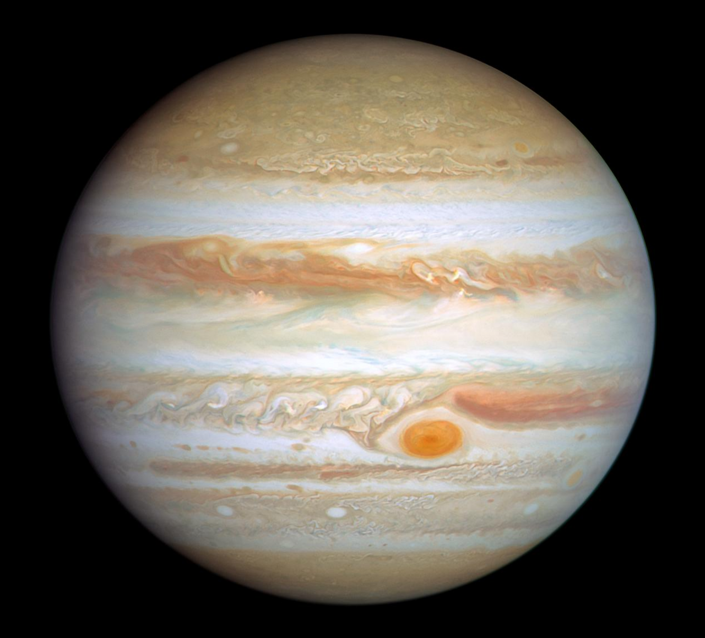
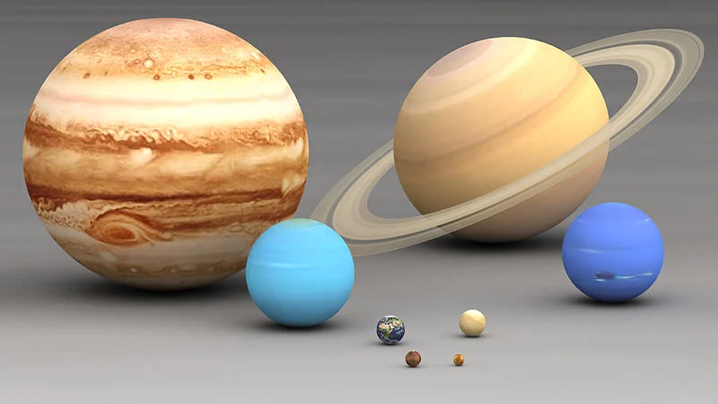

Facts about Jupiter!
- Jupiter is the 5th planet from the sun, measuring a distance of about 484 million miles (778 million kilometers) away.
- Jupiter is the largest planet in our solar system, with a diameter of about 86,881 miles (139,822 kilometers).
- It is a gas giant, meaning it is primarily composed of hydrogen and helium, with no solid surface.
- Jupiter has at least 79 moons, with the four largest being the Galilean moons: Io, Europa, Ganymede, and Callisto.
- The planet has a strong magnetic field, which is about 20,000 times stronger than Earth's.
- Jupiter's atmosphere is known for its colorful bands and the Great Red Spot, a massive storm that has been raging for centuries.
- It takes about 12 Earth years for Jupiter to complete one orbit around the Sun.
- The planet has a faint ring system, which is not as prominent as Saturn's rings.
- Jupiter's gravity is so strong that it has a significant influence on the orbits of other planets and objects in the solar system.
- The planet emits more heat than it receives from the Sun, due to the slow contraction of its interior.

The Great Red Spot is a giant storm slightly wider than Earth. Astronomers have been watching it for over 150 years.
